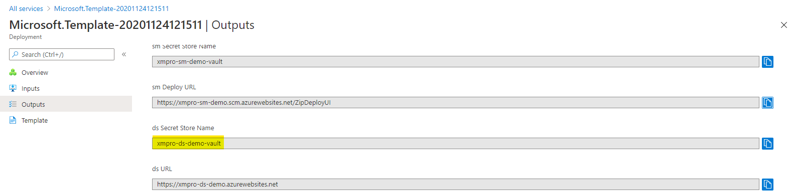
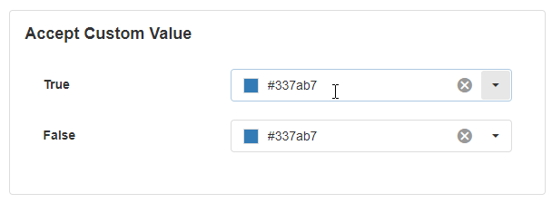
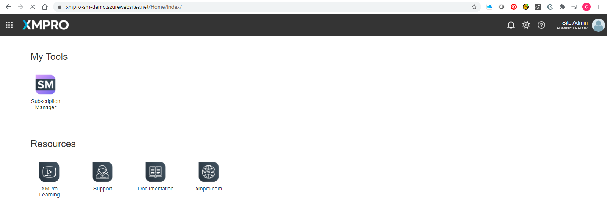

Color Selector
The Color Selector lets the user select from a range of colors using the selector dropdown. Once the user selects the color, the hex value of the color is displayed in the input box. This is a useful tool for the user to select colors visually.

Note
Some images in this document may be missing and need to be migrated from the original GitBook documentation.
Color Selector Properties
Appearance
Common Properties
The Color Selector has properties that are common to most Blocks: visible, styling mode, tooltip, placeholder, and clear buttons;
See the Common Properties article for more details on common appearance properties.
Behavior
Common Properties
Common options for the behavior include read-only and disabled.
See the Common Properties article for more details on common behavior properties.
Apply Value Mode
When the use buttons option is selected, the user has to select from the OK or Cancel buttons at the bottom of the color picker.


Accept Custom Value
If this is enabled, the user will be able to type in or copy and paste their own hex value into the input box. If this is disabled, this will not be possible and the user can only select a color from the dropdown.

Value
Common Properties
The value property is common to most Blocks;
See the Common Properties article for more details on common value properties.
The value determines the starting color for the Color Selector. Only a sequence of characters that are equal to a known hex color will be accepted.

Action
Common Properties
Properties that are common to most Blocks include: Navigate To and Show Confirmation Dialog;
See the Common Properties article for more details on common action properties.
Last modified: May 29, 2025